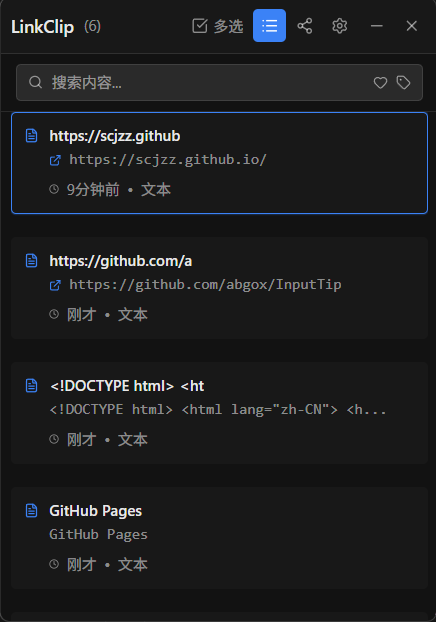
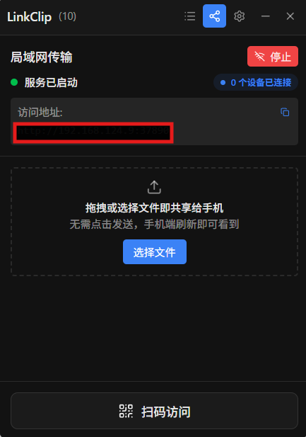
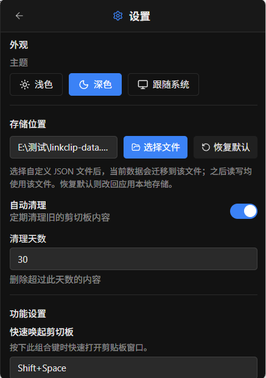
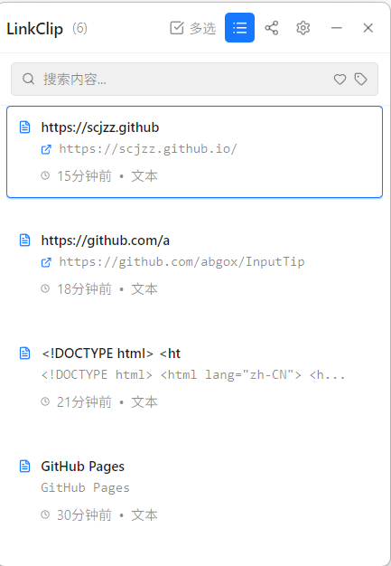
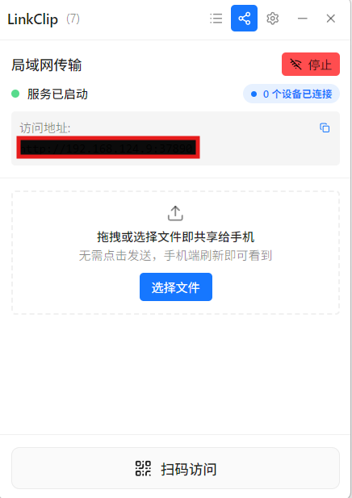

v1.0.0 正式发布 · Windows 专属
剪贴板历史 +
局域网无缝传输
一款基于 Electron + React 的现代化桌面效率工具。
自动管理您的剪贴板历史，并在 PC 与手机之间极速传输文件。
LinkClip.exe






不仅是剪贴板，更是生产力
智能剪贴板管理
自动保存复制过的文本与图片。支持强大的搜索、标签分类、收藏与置顶功能。相同内容自动去重，保持历史记录整洁。
不限条数
图片预览
批量操作
局域网快传
手机扫码即可连接。支持文本同步与文件拖拽互传，无需登录任何账号。复杂验证码通过手机端输入内容可同步到 PC 剪贴板，Ctrl+V 即可粘贴
数据私有化
可选自定义 JSON 存储路径。支持手动/自动清理过期数据，您的数据完全掌控在自己手中。
极致个性化体验
不论是外观主题还是操作习惯，LinkClip 都尊重您的选择。
- 快捷键自定义唤起 (如 Ctrl+Shift+S)
- 跟随系统的深浅色主题模式
- 窗口置顶
开机自启
自动清理 (30天)
主题模式
跟随系统
构建于现代技术栈之上
准备好提升效率了吗？
免费、无广告。LinkClip 是您桌面上最安静得力的助手。